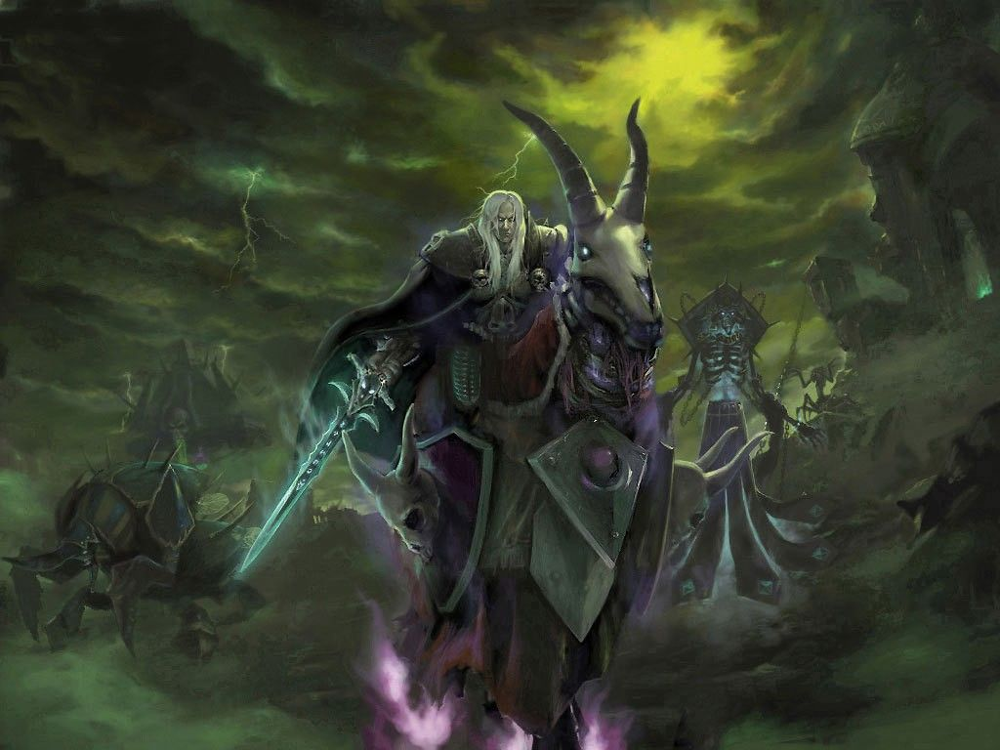

Arthas Menethil, Crown Prince of Lordaeron and Knight of the Silver Hand, was the son of King Terenas Menethil II and heir to the throne.
He was trained as a paladin by Uther the Lightbringer and was inducted into the Order of the Silver Hand.
Arthas also had a romantic relationship with the kind sorceress Jaina Proudmoore.
Committed to the protection of his people, Arthas was determined to stop the plague spreading throughout Lordaeron.
Become Death Knight

In Northrend, Arthas became the first of the Lich King's death knights. He was given a suit of saronite armor, and slew many of his own men.
Some among them (like Falric, Marwyn and Thassarian) were raised as death knights in Arthas's service.
Arthas returned to Lordaeron months later, and the kingdom rejoiced at the return of its champion.
Flanked by Falric and Marwyn, Arthas entered the imperial chamber and knelt before the throne.
After telling his father that he no longer needed to bear the weight of his crown, Arthas walked up to Terenas and ran Frostmourne through his heart.The king's bloodied, broken crown remains lost to this day.
As he drew Frostmourne, Arthas remembered the words of his old friend Varian describing his own father and king Llane being stabbed in the heart.
Lich King
Despite his promising beginnings, Arthas became one of the most powerful and evil beings Azeroth would ever know.
Although he killed the necromancer Kel'Thuzad, Arthas was unable to stop the spread of the plague and resorted to increasingly desperate methods, such as purging the city of Stratholme.
Taking up the cursed runeblade Frostmourne, Arthas was able to defeat the demon Mal'Ganis, but he lost his soul in the process.
Becoming a death knight of the Scourge, he led the undead in destroying Lordaeron, Quel'Thalas, and Dalaran.
Arthas later made his way to the Frozen Throne of Icecrown and merged with the Lich King.
Ruling as the Lich King for years afterward, Arthas had the last remnants of his humanity destroyed and was ultimately defeated in combat by Highlord Tirion Fordring and his champions of the Light.
Cradled by the spirit of his father, Arthas Menethil died, leaving the mantle of the Lich King to be taken by a noble soul who would contain the power of the Scourge.